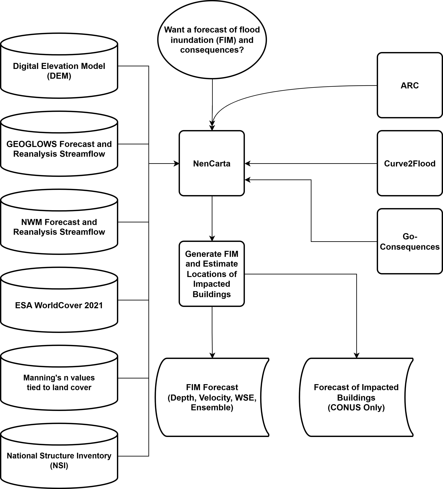

NenCarta documentation
NenCarta automates riverine flood inundation mapping using ARC, Curve2Flood, and forecast streamflow inputs from GEOGLOWS or the National Water Model. It can also estimate direct flood consequences for the coterminous United States with Go-Consequences and the National Structure Inventory.


Contents
Highlights
Run NenCarta from the GUI, JSON input files, or the command line.
Use GEOGLOWS, NWM short-range, NWM medium-range, or NWM long-range streamflow sources.
Support bathymetry-enabled or bathymetry-disabled flood mapping workflows.
Optionally estimate flood consequences with a Go-Consequences Docker image.